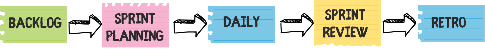

🔄 Metodologia SCRUM
El projecte es va dur a terme seguint el model SCRUM, una metodologia Agile centrada en iteracions curtes (sprints), comunicació constant i revisió de producte. Aquesta tècnica ens va permetre adaptar-nos ràpidament als canvis i distribuir bé els rols dins l’equip.

🤝 Treball Col·laboratiu
El nostre equip ha treballat de manera col·laborativa mitjançant GitHub com a repositori i gestió de versions, i hem utilitzat Flutter com a framework per al desenvolupament de l'app.
📂 Arquitectura del projecte
La nostra aplicació segueix una arquitectura modular i clara. A continuació es mostra l’estructura de carpetes del projecte:
KidConnect/
├── android/
├── ios/
├── linux/
├── macos/
├── windows/
├── lib/
│ ├── main.dart
│ ├── AddServicePage.dart
│ ├── App.dart
│ ├── ...
├── pubspec.yaml
├── README.md
└── LICENSE